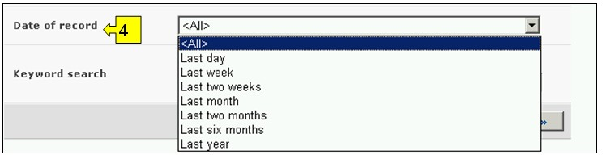
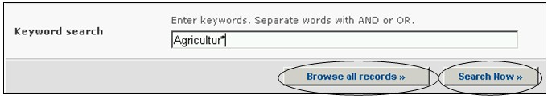
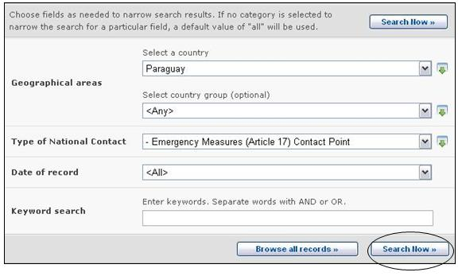

URL: http://bch.cbd.int/database/contacts/
L’article 19 du Protocole demande la désignation d’Autorités Nationales Compétentes et d’Interlocuteurs Nationaux. Cette information, de même que les Sites Web et les Bases de Données Nationaux sur la Biosécurité, est disponible depuis la page de Recherche des Interlocuteurs Nationaux.
Une interface de recherche pour trouver l’information sur les Interlocuteurs Nationaux est accessible depuis le lien dans le menu déroulant Trouver l'information sur la barre de navigation, ou depuis le lien dans le menu du côté gauche de la page Trouver l'information ou depuis le lien dans le texte des Interlocuteurs Nationaux dans la même page.

Figure 3
L’interface de recherche des Interlocuteurs Nationaux permet à l’utilisateur de chercher :
-
Des Correspondants Nationaux du Protocole de Cartagena sur la Biosécurité (CN-PCB), qui sont responsables de la liaison entre le Secrétariat du CBD et leurs gouvernements respectifs ;
-
Des Correspondants Nationaux du CEPRB (CN-CEPRB), qui sont responsables de la liaison avec le Secrétariat du CDB par rapport au développement et à la mise en œuvre du CEPRB ;
-
Des Points de Contacts pour les Mesures d’Urgence pour recevoir des avis conformément à l’Article 17 du Protocole
-
Des Autorités Nationales Compétentes, qui sont désignées et autorisées par les gouvernements pour être responsables d’exercer les fonctions administratives requises par l’Article 19 du Protocole ;
-
Des sites web et des bases de données sur la biosécurité nationale

Figure 4

Figure 5
Sur la page Recherche d’Interlocuteurs Nationaux,il y a cinq boîtes de critères de recherche pour préciser les recherches dans cette base de données. Chacune a un menu déroulant depuis lequel il est possible de sélectionner le critère requis. Le choix par défaut pour chaque menu déroulant est le premier critère en haut de la liste du menu. Sur le côté droit de chaque boîte un bouton permet à l’utilisateur d’activer plusieurs sélections. Une fois dans le mode sélection multiple, il est possible d’ajouter plus d’un critère à la sélection en cliquant sur le critère approprié tout en pressant la touche Ctrl (Contrôle).
La Boîte 1 [Sélectionner un Pays] donne une liste de tous les noms des pays dans un menu déroulant pour que les utilisateurs puissent sélectionner un ou plusieurs pays spécifiques pour une recherche. 
Figure 6
La Boîte 2 [Sélectionner une région] liste des régions dans un menu déroulant pour que les utilisateurs puissent sélectionner un ou plusieurs groupes de pays spécifiques pour une recherche. La liste des régions contient tous les groupes géographiques ou politiques majeurs de pays et permet de restreindre la recherche aux enregistrements soumis seulement par les membres du ou des groupe(s) sélectionnés.

Figure 7
La Boîte 3 [Type d’Interlocuteur National] liste les Types d’interlocuteurs Nationaux disponibles dans la base de données et permet à l’utilisateur de restreindre la recherche à des interlocuteurs nationaux, ou des groupes d’interlocuteurs nationaux, avec des responsabilités spécifiques.

Figure 8
La Boîte 4 [Date de l’enregistrement] permet à l’utilisateur de restreindre la recherche à la date à laquelle l’enregistrement a été enregistré dans le CEPRB. Le menu déroulant fournit un certain nombre d’options pour limiter la recherche seulement aux enregistrements soumis dans la période sélectionnée (par ex. «dernier jour», « dernier mois», « dernière année», etc.).

Figure 9
La Boîte 5 [Recherche par mot clé] fournit une opportunité d’utiliser des mots clé pour restreindre la recherche. L’utilisateur peut utiliser une syntaxe standard avec des mots clé (combinaison d’opérateurs AND / OR) pour chercher avec plusieurs mots ou parties centrales de mots (par ex. « Importation OR Exportation »). Une recherche effectuée en utilisant des mots clé donne seulement les résultats d’enregistrements contenant exactement le texte recherché et non pas les synonymes possibles qui n’ont pas été insérés (c’est-à-dire, une recherche avec un mot clé unique « maïs » donnera une liste d’enregistrements contenant le mot « maïs » mais non pas les mots « corn » ou « Zea mays »).

Figure 10
La page de recherche offre trois boutons pour produire une liste d’enregistrements. Le bouton Rechercher (à la fois en haut et en bas de l’interface de recherche) permet à l’utilisateur d’activer une recherche sur la base des critères de recherche sélectionnés dans les boîtes des moteurs de recherche. Les résultats de la recherche sont, par défaut, classés alphabétiquement par pays. Le bouton Afficher tous les enregistrements (en bas de l’interface de recherche) permet à l’utilisateur d’obtenir une liste de tous les enregistrements dans cette base de données.

Figure 11
Les pages des Résultats de la recherche ont un outil de classement en dessus de la liste d’enregistrements. Celui-ci peut être utilisé pour classer les enregistrements selon des critères spécifiques pour cette catégorie d'information. Notez que les critères de classement changent lorsque l’utilisateur sélectionne des critères de recherche différents.

Figure 12
Exemple 1 : Un utilisateur peut vouloir identifier le point de contact pour les mesures d’urgence au Paraguay pour des questions en rapport avec le mouvement transfrontière non intentionnel des OVM ou les mesures d’urgence. En sélectionnant Paraguay du menu déroulant Sélectionnez un pays et Point de Contact Mesures d’Urgence (Article 17) du menu déroulant Type d'interlocuteurs nationaux, l'utilisateur restreint la recherche aux enregistrements qui ont plus de possibilités de fournir l'information requise.

Figure 13
Lorsqu’il clique sur le bouton Rechercher, une page avec les résultats de la recherche montre quels sont les Interlocuteurs nationaux au Paraguay qui ont une certaine responsabilité pour les mesures d’urgence. Si l’utilisateur sélectionne le titre de l’institution, il peut ouvrir l’enregistrement qui contient les renseignements de l'interlocuteur national.

Figure 14
Exemple 2 : Un utilisateur peut vouloir identifier tous les Correspondants du CEPRB dans les pays membres de l’Association des Nations de l’Asie du Sud-est (ANASE). L’utilisateur sélectionne Asie-Pacifique – Association des Nations Asiatiques du Sud-est dans la boîte Sélectionnez une région et Correspondant du Centre d’échange pour la prévention des risques biotechnologiques dans la boîte Types d’interlocuteurs nationaux. S’il sélectionne le bouton Rechercher, un groupe de résultats détaillant les Correspondants du CEPRB dans les pays membres de l’ANASE s’affiche.

Figure 15

Figure 16